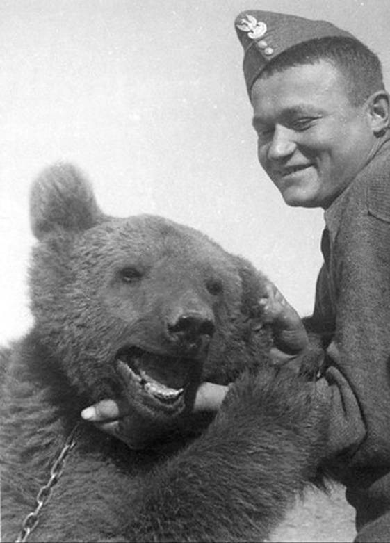
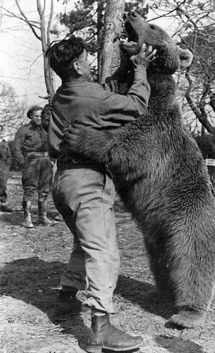

Home
News
Contact
About
Wojtek The Bear
Wojtek was a bear who fought in World War Two alongside
a band of Polish soldiers, shared their beer and cigarettes
- and eventually their fate.

He accompanied the bulk of the II Corps to Italy, serving with the 22nd Artillery Supply Company.
Wojtek became famous by helping soldiers move heavy crates of ammunition.
He enjoyed wrestling with the soldiers and was taught to salute when greeted.
He became an attraction and soon became an unofficial mascot to the units stationed nearby.
